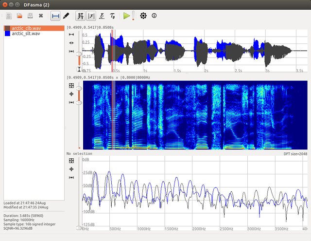
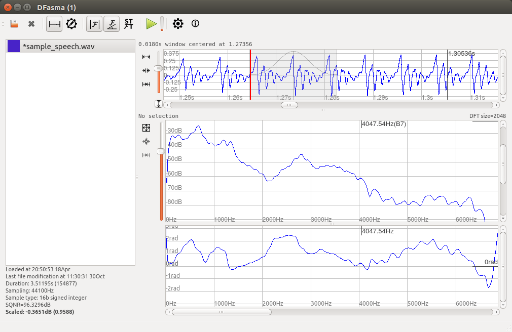
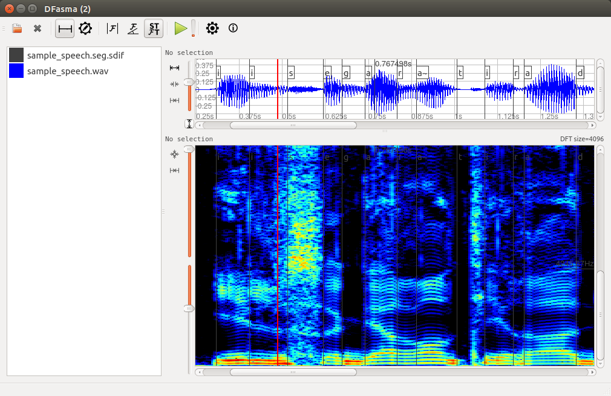
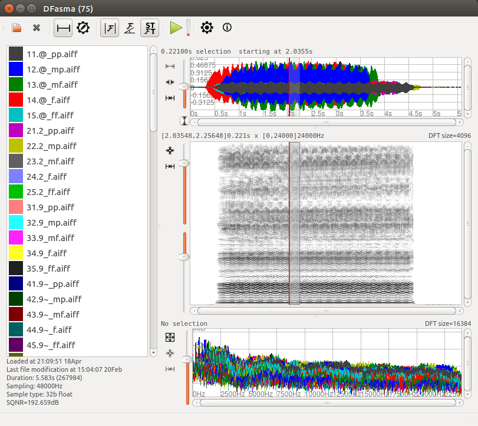

View on GitHub
DFasma
A tool to analyse and compare audio files in time and frequency
Home
Screenshots
Downloads
Documentation
Compatibility Matrix
Spectra comparison

Amplitude and phase spectra

Spectrogram + Segmentation

75 samples loaded from a corpus
